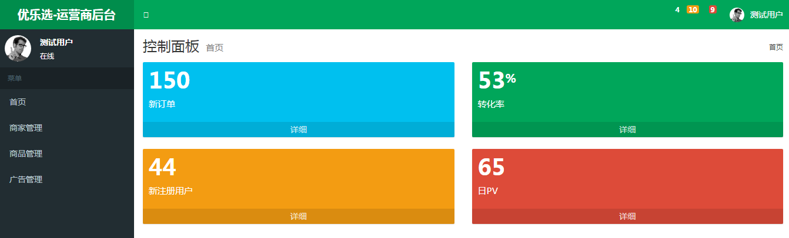
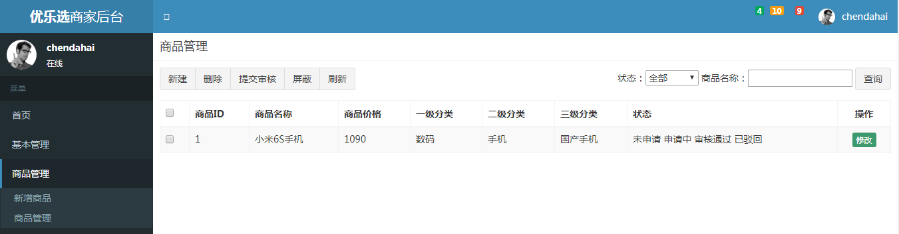

优乐选简介
优乐选网上商城是一个综合性的 B2B2C 平台，类似京东商城、天猫商城。网站采用商家入驻的模式，商家入驻平台提交申请，有平台进行资质审核，审核通过后，商家拥有独立的管理后台录入商品信息。商品经过平台审核后即可发布。
优乐选系统结构
该系统由三个子系统构成，分别是：
- 网站前台
- 运营商后台
- 商家管理
优乐选前台
主要包括网站首页、商家首页、商品详细页、搜索页、会员中心、订单与支付、秒杀频道等。
优乐选运营商后台
是运营商的运营人员的管理后台。
主要包括商家审核、品牌管理、规格管理、模板管理、商品分类管理、商品审核、广告类型管理、广告管理、订单查询、商家结算等。

优乐选商家管理后台
入驻的商家进行管理的后台，主要功能是对商品的管理以及订单查询统计、资金结算等功能。
